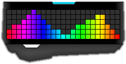

Logitech Spectrogram | Downloads
The latest version is 2.8.0, which was released on 2016-05-22
Download (MediaFire): 64-bit | 32-bitWhat's New:
Note: It is highly recommended to update to the latest version of LGS as it improves lighting performance
significantly. With the update, headset/mouse lighting no longer causes keyboard lighting to lag.
-
HORIZONTAL COLOR WAVE EFFECT (HORIZONTAL RAINBOW)
Added a horizontal color wave effect that can be toggled under the new color mode "Horizontal Gradient".
The speed of the effect and the direction (left, right, center in and center out) can be set.
The spacing between each column of colors can also be selected.
-
VERTICAL COLOR WAVE EFFECT (VERTICAL RAINBOW)
Added a vertical color wave effect that can be toggled.
The speed of the effect and the direction (up or down) can be set.
The spacing between each row of colors can also be selected.
ARX Support for the horizontal and vertical color wave effects will be added in a future update.
-
RECORDING DEVICES CAN NOW BE USED AS THE INPUT DEVICE
Recording devices (such as microphones) can now be selected as the Input Device for the spectrogram.
-
IMPROVED ERROR CATCHING FOR SPECTROGRAM
Added better error catching and more helpful error messages for spectrogram errors.
-
HEADSET/MOUSE LIGHTING REFRESH RATE INCREASED
Headset/mouse lighting now refreshes at the same frequency as the keyboard lighting.
-
BUG FIX
Fixed an issue where the program would freeze if the refresh delay was set to a very low value when the
On-Screen Output window was open.
Version 2.8.0 (2016-05-22)
Windows Executable (64-bit): MediaFireWindows Executable (32-bit): MediaFire
Version 2.7.1 (2016-03-27)
Windows Executable (64-bit): MediaFireWindows Executable (32-bit): MediaFire
Version 2.7.0 (2016-03-20)
Windows Executable (64-bit): MediaFireWindows Executable (32-bit): MediaFire
Version 2.6.1 (2016-03-01)
Windows Executable (64-bit): MediaFireWindows Executable (32-bit): MediaFire
Version 2.6.0 (2016-02-28)
Windows Executable (64-bit): MediaFireVersion 2.5.0 (2016-02-02)
Windows Executable (64-bit): MediaFireVersion 2.2.0 (2016-01-02)
Windows Executable: MediaFireVersion 2.0.0 (2015-12-15)
Windows Executable: MediaFireVersion 1.0.0 (2015-07-06)
Windows Executable: MediaFireSource Code (VS2015 Project): MediaFire